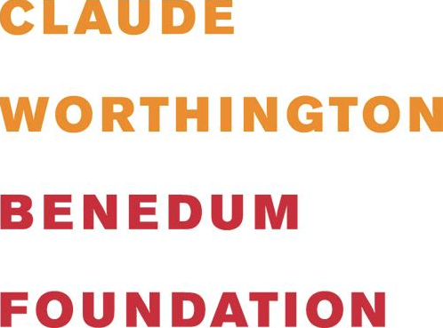
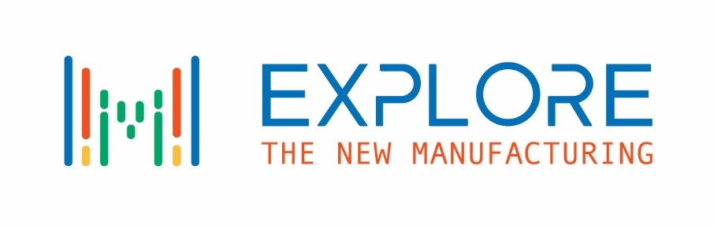
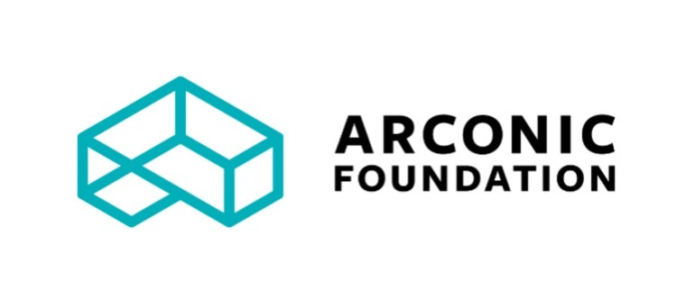
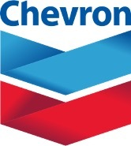
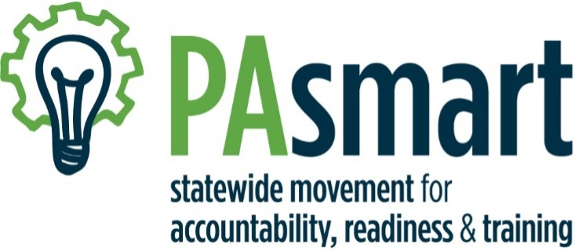
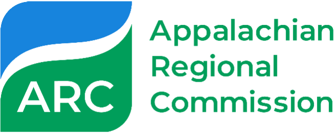

Our Services
At Catalyst Connection, our ultimate goal is to help clients in manufacturing improve their
growth and productivity. We do this by forging partnerships that bring new resources and
continually adding new services to meet clients’ needs and expand business opportunities.
Through focusing on people, products, process, and technology, we create solutions that
benefit your entire organization and operations.
Powering the Potential of Your People
The world’s most successful organizations get superior business results by doing two simple things exceptionally well:
- They build effective programs to select, develop, and retain talent.
- They engage, and invest in, all employees —from the executive suite to the shop floor —by giving them tools for solving problems and taking ownership of their roles.
Powering the Potential of Your People
The most common Organizational Development-related challenges companies faced during the COVID-19 pandemic included keeping an engaged workforce and the uncertainty of COVID-19 implications on the workforce. Catalyst Connection helped manufacturers to work through these challenges by:
- Partnering with Rhabit Analytics to establish the free COVID-19 pulse survey that enables manufactures to gather immediate and critical employee insights and illuminates the opportunities to implement solutions that will contribute to a more engaged workforce and better organizational outcomes during the COVID-19 recovery period.
- Modifying its existing HR Peer Network by creating a weekly forum where manufacturers’ HR representatives convened to share strategy, discuss challenges, and support each other through troubling times.
Powering the Potential of Your People
The world’s most successful organizations get superior business results by doing two simple things exceptionally well:
- They build effective programs to select, develop, and retain talent.
- They engage, and invest in, all employees —from the executive suite to the shop floor —by giving them tools for solving problems and taking ownership of their roles.
People
The world’s most successful organizations get superior business results by doing two simple things exceptionally well:
- They build effective programs to select, develop, and retain talent.
- They engage, and invest in, all employees — from the executive suite to the shop floor — by giving them tools for solving problems and taking ownership of their roles.
Catalyst Connection offered various Organizational Development service over the past year focusing on the following areas:
- Employee Engagement
- Coaching
- Teambuilding
- Leadership Development
- Succession Planning
“The Emerging Leaders in Manufacturing (ELM) Program has been one of the most effective professional development programs that I have had the pleasure of experiencing. Being able to fill my “tool box” with strategies, skills and language has helped me to develop professionally and personally.”
– Denise Grady, Chief Financial Officer, Berner International
"The Emerging Leaders in Manufacturing Program helps participants to become true leaders, providing them with all the tools needed to succeed. We will continue to sign up employees of Schroeder Industries until we are all talking the same "language" "
- John Ciora, Plant Manager, Schroeder Industries
“ELM provided me the time and opportunity to focus on self-growth within a peer group. The small group setting fostered meaningful discussions on dilemmas I was encountering on recent work projects.
This experience helped my personal development more than any other course, seminar, or work training I’ve encountered in my 20+ year professional career.”
- Joe Miller, Plant Manager, Berner International
Women in Manufacturing
At Catalyst Connection, we celebrate women in manufacturing and their accomplishments. We actively work to educate the upcoming female workforce on opportunities available to them in the manufacturing industry, and also empower the women we work with every day.
LEARN MOREOrganizational Development Course Catalog
Organizational development is essential to creating an engaged workforce—a workforce that contributes to the sustainability and growth of your manufacturing organization. When dedicated organizational resources and investments support the training and development of employees at all levels, companies achieve higher rates of success and better business results.
As industries, workforces, and organizations evolve and change in real-time, companies must prioritize their efforts to improve productivity and efficiency, increase profits, and develop their future leaders.
LEARN MOREEmerging Leaders in Manufacturing (ELM) Program
Every company has high potential employees, but many smaller organizations do not have strong systems in place to support their growth. Catalyst Connection’s Emerging Leaders in Manufacturing (ELM) program is a proven platform for helping your top performers achieve personal and professional growth by focusing on mission-critical topics and applied learning.
LEARN MOREProcess
Powering the Potential of Your Processes
Today’s manufacturers are already operating at a high level of performance. Each incremental improvement in quality or cost savings can have significant impact on profitability and competitive advantage. Catalyst Connection works with companies to implement ways that successful manufacturers use on a journey toward Operational Excellence. Catalyst Connection offers training and services including:
Lean Manufacturing
With a focus on:
- Lean Improvement Sustainment - KATA
- Lean Leadership
- Value Analysis/Value Engineering
- (Covid related –) Facility Layout and Health and Safety analysis
- Value Stream Mapping
Six Sigma
Training Within Industry
Quality Management Systems
With a focus on the following tools for success:
- Quality Systems Audits
- Effective Root Cause/Corrective Action
- Failure Mode and Effects Analysis
- Statistical Process Control
- Risk Management
- Internal Auditor Training
“Quintech has used Catalyst Connection’s services for over 20 years. Most recently, in 2019 Catalyst Connection taught a workshop at Quintech on Root Cause and Corrective Action analysis. They also provided Quintech with their internal ISO audit service in 2019 and 2020. Those services have helped us maintain our ISO certification. We will engage them for our internal audit once again this year.”
- Frank Elling, President, Quintech Electronics and Communications Inc.
"There is no doubt that the training completed through Catalyst Connection in several disciplines, has had a significant impact on our business. Our customers (primarily the DoD), require the utmost level of quality. The development of the management team to facilitate that quality is a critical component in our continued success. Stellar appreciates the support and has already scheduled additional training to further expand the toolkits of our team."
– Lori Albright, President, Stellar Precision
“Catalyst Connection has been an invaluable partner to Metal Solutions over the past several years, and has especially been a crutch during 2020 and the global pandemic. In addition to providing Covid19 resources and counseling, they worked closely with Metal Solutions on company-wide lean manufacturing training and KATA coaching to improve efficiencies in the shop. On a personal level, I participated in the Women in Leadership program offered by Catalyst and have grown significantly as a leader, which I believe helped me guide our company through the uncertainties of 2020.”
- Melissa Monarko, President, Metal Solutions
- Not able to have a consultant onsite to observe work-flow and mapping.
- Not able to hold in-person training.
- Not many clients were in positions to improve processes. Manufacturers were, and still are, hesitant to spend money in such an uncertain time.
- Offering facility layout options with COVID restrictions in place.
- Offering virtual options for Value Stream Mapping and Waste Walk.
- Developed videos for in-person training without the need to sit beside each other or share simulation tools.
Powering the Potential of Your Products
Catalyst Connection’s business growth consulting services help companies increase their profitability and their top-line growth by securing new customers in existing markets, entering new domestic and international markets, and successfully developing new products to sustain competitive advantage.
Product
New Customers
- In 2020, Catalyst Connection has assisted companies with:
- Expanding Digital Marketing
- Identifying Qualified Leads
- Improving Sales and Customer Service Performance
New Markets
Due to COVID-19 limitations, manufacturers have been forced to find new ways to generate strong leads. Catalyst Connection has assisted companies with strengthening their capabilities in order to successfully enter new markets. Assistance included:
- Strategic Planning
- NIST SP 800-171 Assessment in Preparation for Cybersecurity Maturity Model Certification (CMMC)
- Program Development to Comply with International Traffic in Arms Regulations (ITAR) and Export Administration Regulations (EAR)
On Strategic Planning:
“J.V. Manufacturing Co., continues to push the pendulum of change towards a future so that the generations after us are left with an enriched culture of problem solving. We couldn’t do this without the great support from Catalyst in their TWI training and Strategic Planning Assistance, helping us train our workforce today to prepare them for tomorrow.”
– Melissa Vecchi, Executive Director, J.V. Manufacturing Co., Inc.9
The most common Business Growth-related challenges manufacturers are facing during this pandemic include:
- Loss in sales revenue which delayed internal initiatives and in some cases resulted in layoffs.
- Inability make face-to-face sales calls which contributed to loss in top-line sales revenue.
- Inability to exhibit at trade shows which hindered efforts to expand into new and existing markets, launch new products, and build name recognition.
Catalyst Connection helped manufacturers to overcome these obstacles by:
- Incorporating Lead Generation service offerings.
- Incorporating Business Resiliency discussions into Strategic Planning offerings.
- Transitioned the Manufacturers’ Rep & Distributor Management Series from an in-person offering to an e-Learning series.
- Developed the Cyber Resiliency for Defense Contractors Webinar Series.
Advanced
Manufacturing
Technologies
Catalyst Connection is at the center of Advanced Manufacturing Technologies development through engagement with Manufacturing USA institutes including America Makes (additive manufacturing), Advanced Robotics for Manufacturing (ARM), and LIFT. These institutes are tasked with technology and workforce advancement and Catalyst helps to ensure the results positively impact our manufacturing clients.
- Additive Manufacturing
- Robotics and Automation
- Digital Manufacturing & Design
- Cyber Security
- Enterprise Software Selection (ERP and CRM)
- Readiness and Capability Assessments
- Technology Assistance Projects (Suite of Services)
- Technology Adoption Roadmapping
- RFI and RFP Development and Management
- Technical Project Management Services
- AMT Working Groups
- Webinars & Trainings
1. Cybersecurity
Extensive remote work by companies, including office staff at manufacturers, is highlighting the importance of cybersecurity. This, along with the new AIM Higher Consortium focused on the DoD supply chain, has accelerated the services offered in the cybersecurity space, including a future partnership with FutureFeed to facilitate CMMC assessment and System Security Plan (SSP)/Plan of Action and Milestones (POAM) execution at manufacturers.
2. Robotics
Implementing a new technology like robotics on the factory floor is a big undertaking involving steps such as identifying opportunities, exploring technology offerings, connecting with vendors and service providers, collecting proposals, evaluating return on investment, selection, and more. And that is all prior to implementation. With so many responsibilities to keep a successful operation running, manufacturers often run short on bandwidth to thoroughly evaluate technology. As a result, Catalyst Connection rolled out their Systems Integrator Selection Assistance offering to come alongside the manufacturer and support them through the whole process. Catalyst’s connection to the nationwide MEP Network and Manufacturing USA Institutes like ARM (Advanced Robotics for Manufacturing) further increases the level of support and expertise available.
3. Digital
Manufacturers are driven to continuously evaluate their processes and pursue improvement opportunities. However, the COVID-19 pandemic and the challenges it placed on manufacturers pushed this to a whole new level. Many manufacturers saw the associated slowdown as an opportunity to explore and implement new technologies. Catalyst Connection expanded their Systems Integrator Selection Assistance service beyond robotics to also encompass digital technologies and draw on their extensive 3rd party network to help clients find the best partner for their project.
We’re filling the
unemployment gap.
Catalyst Connection is proud to partner with manufacturing leaders in our region to provide both workforce and educational initiatives to current and aspiring manufacturers. It is a true passion of ours to help fill the gap in skilled workers through our continuous work to engage companies and individuals in our communities.
Workforce Initiatives
Regional Earn and Learn (REAL) Jobs Initiative
The Regional Earn & Learn (REAL) Jobs program addresses the skilled worker shortage and the social and income disparities in Pittsburgh.
During this program, individuals from underrepresented groups and disadvantaged communities in the Pittsburgh region will have the opportunity to participate in one-year of career counseling and job development services. Services will leverage new and existing relationships to emphasize preemployment training for career tracks in manufacturing, advanced manufacturing and robotics.
For robotics companies, the REAL program provides them with an opportunity to be “conscious capitalists” by enhancing their ties to the community while at the same time building their technical, sales & distribution, and administrative human resources. There is no financial obligation to participate in the program beyond paying the trainees and providing them with health benefits.
Operation Next – Prepare Your Manufacturing Workforce for the Future
The COVID-19 pandemic has disrupted the manufacturing sector and impacted its workforce. Operation Next provides flexible training pathways to upskill or reskill employees of small and medium manufacturers who are returning to work or developing new skills needed for the post-pandemic economy.
Operation Next is now available at no-cost to small and medium manufacturers in Pittsburgh who have been impacted by the COVID-19 pandemic. This support is provided by LIFT with a grant from the National Institute of Standards and Technology (NIST).
Operation Next features an accelerated, hybrid curriculum that combines virtual learning online through simulations and multimedia with hands-on, performance-based learning on real-world manufacturing equipment.

Industrial Manufacturing Technician (IMT) Apprenticeship Program
The Industrial Manufacturing Technician Apprenticeship helps entry-level workers in manufacturing quickly enhance their skills and advance with their current employer. Due to changing manufacturing technologies, entry-level workers require higher skills than before and employers are struggling to recruit and retain these type of workers. The IMT program is a state registered apprenticeship to help meet these employer needs.
This registered apprenticeship program is a hybrid approach providing production workers with the knowledge and competencies needed in the advanced manufacturing environment. A hybrid approach integrates time-based learning combined with competency-based training. Registered apprenticeships utilize an “Earn and Learn” approach to building worker skills. The IMT program provides 3,000 hours of structured technical instruction. This instruction is comprised of 2,736 hours of on-the-job training (OJT) from experienced mentors assigned by the employer and 264 hours of related technical instruction. All IMT apprentices are employees of a specific company, earning wages, benefits, and seniority while they learn new skills.

Education Initiatives
The Explore the New Manufacturing
The Explore the New Manufacturing website provides information about careers in manufacturing for students, parents, and teachers. The youthfully themed website was relaunched in January 2021. Students can find videos and other information about careers in manufacturing. Teachers will see resources for their classrooms including experiential learning programs, lesson plans, and virtual experiences. Parents can learn about how manufacturing has changed and what resources are available for their young ones to pursue these careers. Additional resources, events, and career guidance are provided through the blog.
2020 was the 20th anniversary of Catalyst Connection’s education programming.

Explore the New Manufacturing Program Sponsors and Supporters
Sponsored/Funded by:




Manufacturing Innovation Challenge
Manufacturing Innovation Challenge engages our manufacturing clients to provide "real world" experiential opportunities for students while enhancing the program with connections to the pre-apprenticeship and apprenticeship pathway. Projects involve emergingtechnologies and increasing the regional awareness of the program successes through videos and new promotional materials.
MIC projects begin with students and teacher taking a tour of the partnering company and learning about the problem to be solved; then working on their projects in the classroom for 8-10 weeks, and finally, presenting their recommendations/solutions to the company representatives. Past projects have included new product development, market research, technology solutions, quality improvement, and process improvements. This program exposes students to career opportunities in manufacturing, provides them with skill enhancement opportunities through solving real-world problems, and provides teachers with a way to bring manufacturing into their curriculum. Catalyst has also utilized virtual projects during the time frame when Covid-19 restrictions at schools make it impossible to do in-person activities.
What’s So Cool About Manufacturing Student Video Contest?
The What’s So Cool About Manufacturing middle school video contest (WSCAM) initiative engages students in exploring the new manufacturing and additional exposure of manufacturing careers to thousands throughout the SWPA region.
Teacher advisors receive training on video production, storytelling, career connections, and best practices from other participating teachers. Schools are matched up with local manufacturing companies to produce a short video from the student’s point of view on why manufacturing is so cool.
In addition to creation of a video, students are also asked to promote their videos for a five-day online voting period for a chance to win one of several award categories.
After videos are created, a culminating award ceremony has been held at prominent community venues in past years. However, due to COVID-19 restrictions, these events have been virtual.
This initiative directly impacts a change in perception for manufacturing in our region – more than 100,000 votes were cast in past programs.
You can browse the various submissions for the What’s So Cool About Manufacturing Student Video Contest on the Catalyst Connection YouTube channel:
Pre-Apprenticeships
Catalyst Connection’s Industrial Manufacturing Technician (IMT) pre-apprenticeship program is a key bridge between those on a pathway to manufacturing to careers. Our program has been approved as Pennsylvania certified program and has been gaining momentum in the region. This is due in part to schools needing to pivot to virtual or hybrid learning models during the Covid-19 pandemic. But also, there is a strong desire for schools to provide content that is industry relevant, industry approved, and that leads to industry recognized credentials. Our program provides all of these attributes while leveraging content and experiences from our other programs/resources. The program was piloted in 2019-20 academic year with 3 students at Quaker Valley High School. Since the initial pilot period, Quaker Valley has expanded to 24 students and integrated into the curriculum of their engineering class. Nazareth Prep and Intermediate Unit 1’s 3 campus schools are also adopting the program. We have interest from four other schools. We are projecting to have over 100 students involved in the program in 2021 with strong interest continuing into the future. We will expand the program to include 6 additional schools and support 100 total students on beginning this pathway to a career in manufacturing. Students enrolled in the pre-apprenticeship program will take two online modules from our IMT apprenticeship curriculum. Tours of local companies, speakers in the classroom, job shadowing, interviewing skills, and resume writing will also be provided. We will also leverage our various Explore the New Manufacturing career resources including flyers, mobile games, virtual scavenger hunts, and websites. Those without IMT registered companies in close proximity to their school still have the opportunity to enroll in other regional apprenticeship programs (Catalyst’s robotics technician apprenticeship, NTMA, German Chamber, etc.) or go directly into the workforce as they will have a demonstrated aptitude for the skills required upon completing the pre-apprenticeship experience. Our workforce team will assist in the placement of students upon completion of the pre-apprenticeship in jobs or local training programs.
Manufacturing Day
Catalyst Connection continued our annual tradition of hosting a local Manufacturing Day event for students and teachers. This is part of a week of activities in early October where manufacturing careers are highlighted across the country. In the past, we have hosted regional events for middle and high school students at our Mill 19 location, at regional partner locations (such as Pitt’s Manufacturing Assistance Center). 2020 event included a virtual series of panel discussions. The events featured panel discussions comprised of diverse mix of young manufacturing professionals.
Manufacturing Day with Advanced Robotics in Manufacturing (ARM):
Watch Video
Links to 2020 Manufacturing Day Panel Discussions: